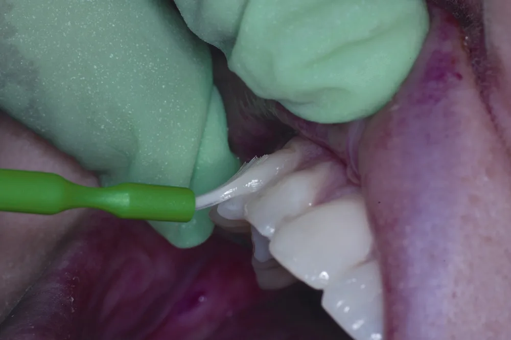

نسخه استخراجشده؛ ترجمه یا تأیید علمی انجام نشده است. وضعیت: captured
وارنیش سدیم فلوراید ۵٪ — انتخاب اول در کودکان، بهویژه زیر شش سال. روی دندان مرطوب هم میچسبد، تری نمیخواهد، در چند ثانیه اجرا میشود و مقدار بلعیدهشده ناچیز است.
ژل یا فوم APF — با تری، چهار دقیقه، همراه ساکشن. چون حجم زیادی ماده در دهان میماند، در کودکان زیر شش سال توصیه نمیشود.
خمیردندان فلورایددار — کمغلظتترین ابزار، ولی چون روزانه است، بیشترین سهم را در حفاظت واقعی دارد.
یک هشدار: APF اسیدی است و سطح ترمیمهای کامپوزیت و پرسلن را زبر و کدر میکند؛ در این بیماران سراغ فرمولاسیون خنثی برو.
مقدار خمیردندان بر پایهی سن:
زیر سه سال: به اندازهی یک دانه برنج — یعنی فقط یک لایهی نازک
سه تا شش سال: به اندازهی یک نخود
غلظت: در هر سنی خمیری با دستکم ۱۰۰۰ ppm فلوراید؛ خمیرهای کمفلورایدتر اثر پیشگیرانهی کافی ندارند. خطر بلع را با مقدار کنترل کن، نه با غلظت.
مسواک تا وقتی کودک مهارت کافی ندارد باید زیر نظر یا با کمک بزرگتر انجام شود.
تکنیک طلایی پس از مسواک: کف را تف کن، ولی دهان را با آب نشوی. شستوشو همان مخزن فلورایدی را که تازه ساختهای میشوید و میبرد.
فاصلهی وارنیش: در کودک با ریسک معمولی هر شش ماه، و در کودک پرریسک هر سه ماه.
